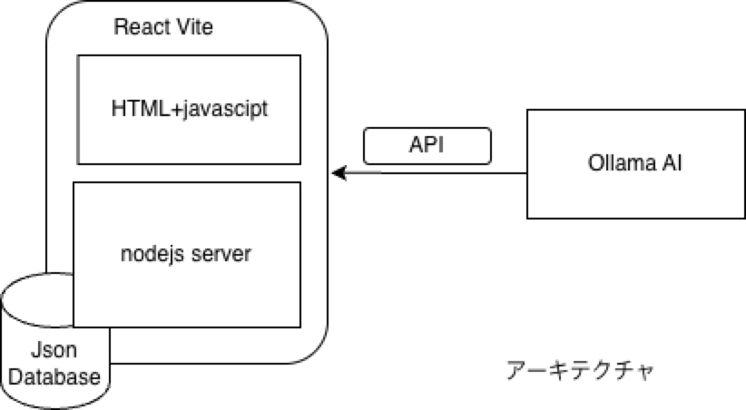
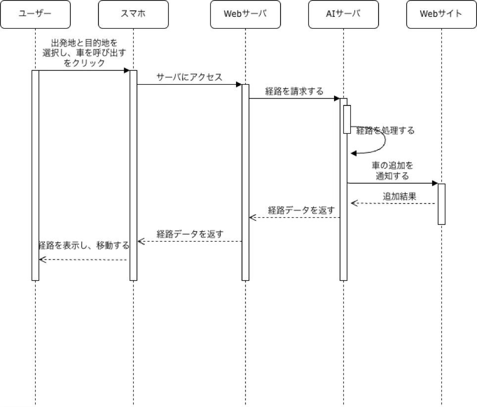
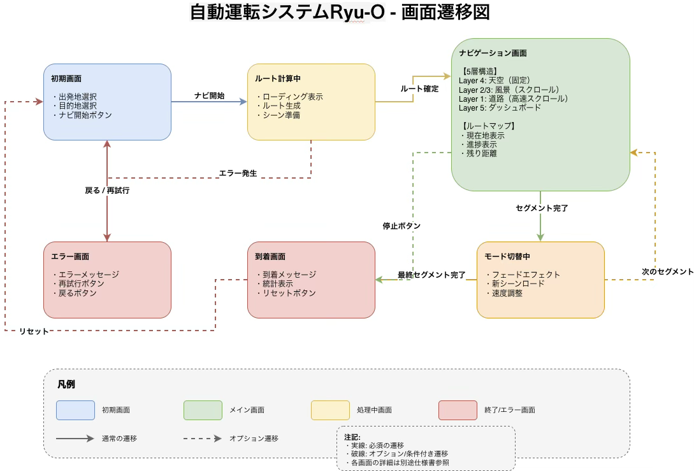

RYU-Oの開発には、最先端のWeb技術とリアルタイム通信技術を採用しています。
React
TypeScript
Vite
Three.js
Node.js
WebSocket
Tailwind CSS
GSAP
システム全体の構成図です。フロントエンド、バックエンド、そしてリアルタイム通信を統合したアーキテクチャを採用しています。

RYU-Oの主要な利用シーンと、ユーザーとシステムの相互作用を示したユースケース図です。

アプリケーション内の画面遷移フローを視覚化した図です。ユーザーの操作に応じた画面の流れを確認できます。
